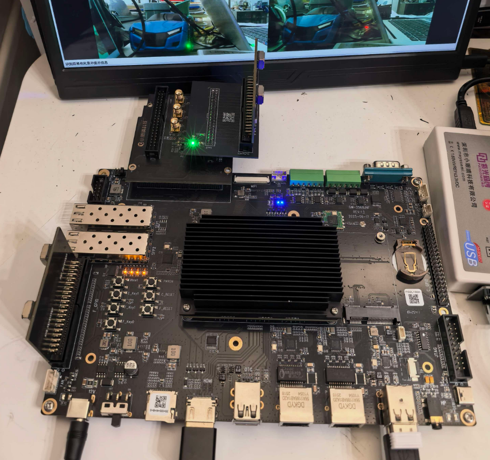
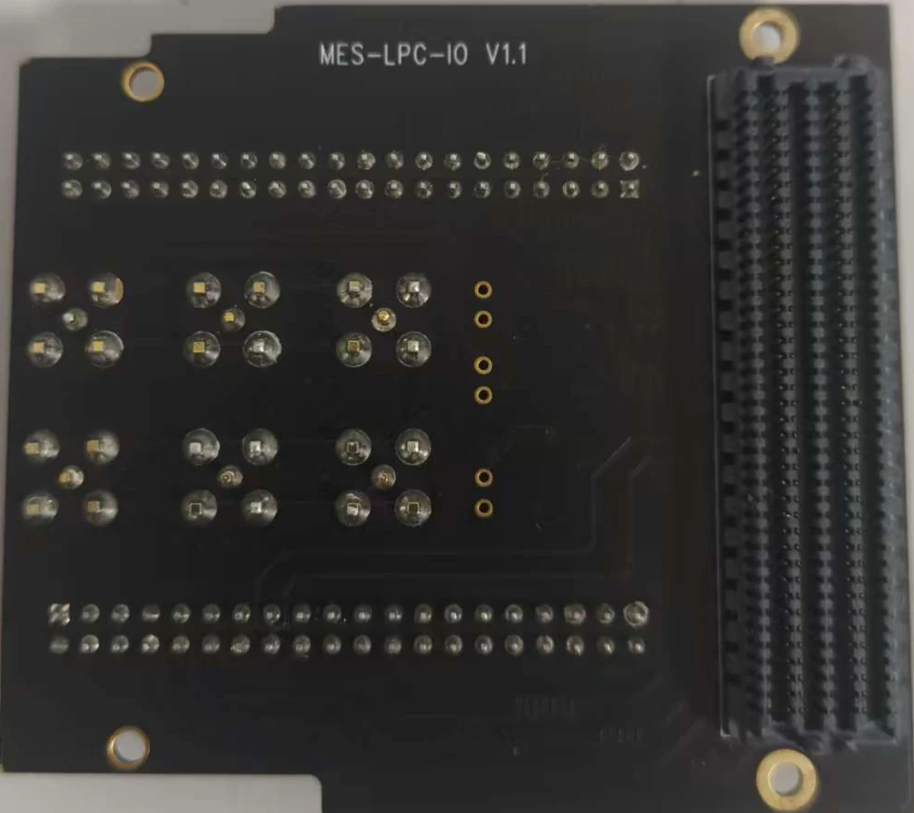
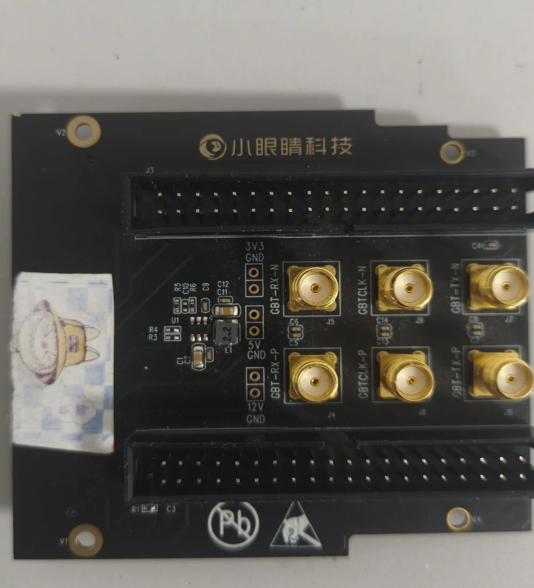
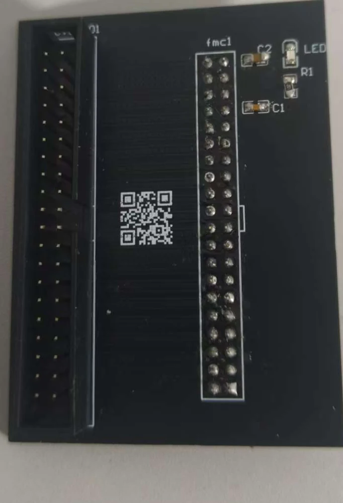
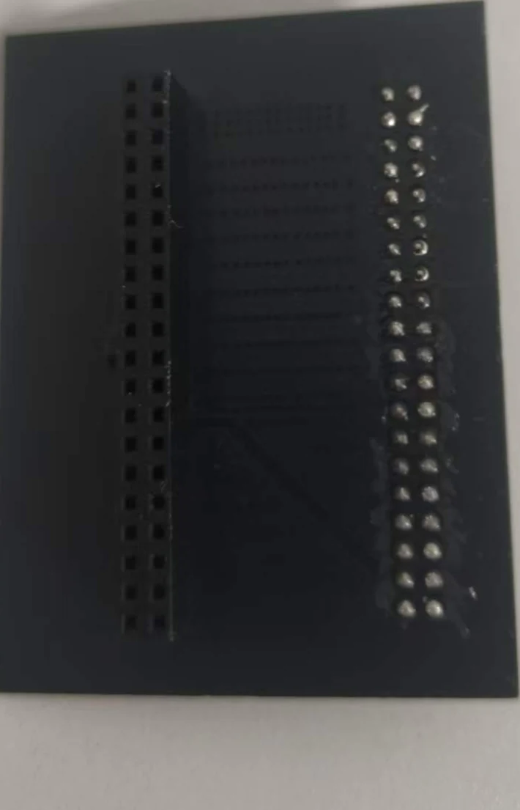

RK3568 · 字符遥测等待遥测
等待 RK 上报检测与方向数据
最近遥测信息
等待 RK 字符消息
等待 RK 上报检测与方向数据
8266WifiCar · TCP 192.168.4.1:8888
Node.js · 等待状态接口
绿灯通行，按所在车道规划方向
当前场景规则允许执行规划动作
↑ 关闭转向 · ← / → 转向
空格 行驶 / 停止 · X 强制变道
测试前请架空车轮；控制指令会直接驱动车辆。
未发送控制指令实线/虚线、障碍物距离与导航识别尚需接入对应算法；视图汇总不等于本车通行信号。
| 北京时间 | 来源 / 场景 | 决策 | 状态 |
|---|
| 画面 | 类别 | 置信度 | 位置 (x1, y1, x2, y2) | 检测帧号 | 接收时间 | 状态 |
|---|---|---|---|---|---|---|
| 尚未收到检测结果 | ||||||
| 依据帧号 / 证据编号 | 行为类别 | 行为执行时间 | 是否执行 | 用户操作 | 是否警告 |
|---|---|---|---|---|---|
| 暂无行为日志 | |||||
推理数据、检测类别和控制方向通过结构化字符消息上报；视频传输指标独立显示。
等待 RK 推理数据
| 摄像头 | 耗时 | 目标数 |
|---|---|---|
| 等待上报 | ||
| 摄像头 | 类别 | 置信度 |
|---|---|---|
| 等待上报 | ||
查看 RK 原始上传、云端下发与 ESP32 回执。这里只观察数据，不发送测试动作。
传输通道：RK HTTPS JSON → 云端 → ESP32 WSS。命令原文中的 \r\n 为实际结束符；HEX 只做显示转换。ESP32 USB/UART 调试输出目前未转发，此处不冒充串口采样。密钥字段脱敏；超长报文显示截断提示。
从四路 OV5640 采集，到 FPGA 预处理、RK3568 推理、云端遥测，再到上位机和 ESP32 小车执行。




